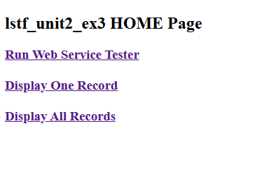
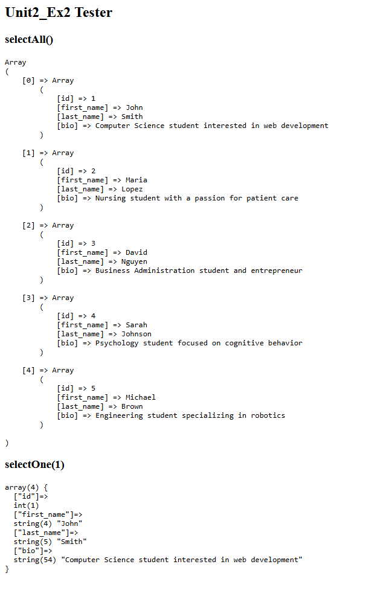
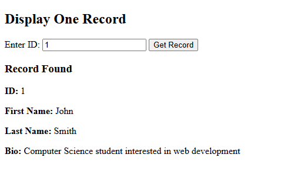
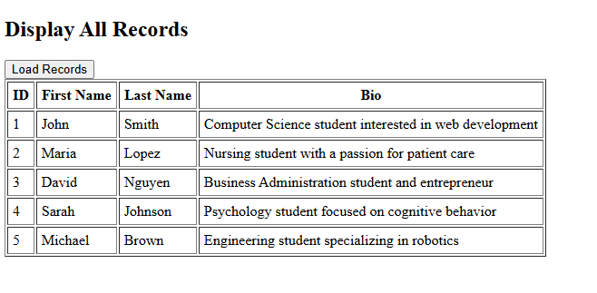

About the Project
This project was built as part of CIS 266 to demonstrate two different PHP programming approaches — Object-Oriented Programming (OOP) and Procedural PHP — while implementing a RESTful web service that communicates with a MySQL database using AJAX and JSON.
The application connects to a MySQL people table and exposes it through a web service,
allowing users to retrieve a single record by ID or display all records in a table. The project
explores how the same functionality can be implemented using both OOP (with a PeopleDAO
class and a Repository pattern) and a procedural approach, highlighting the differences
in code structure and organization.
Technologies Used
Key Features
- RESTful web service that serves student data as JSON from a MySQL database
- Display One Record — enter an ID and retrieve a single person's details via AJAX
- Display All Records — load all records from the database into a dynamic HTML table
- Web Service Tester — raw output showing the JSON data returned by the service
- Implemented using both OOP (PeopleDAO class) and procedural PHP for comparison
Screenshots

Home page with navigation links

Web Service Tester — raw JSON output

Display One Record by ID

Display All Records in a table
Sample Code
OOP approach — PeopleDAO class handling database queries:
// PeopleDAO.php — OOP approach
class PeopleDAO {
private mysqli $conn;
public function __construct(mysqli $conn) {
$this->conn = $conn;
}
// Return ALL rows as array of associative arrays
public function selectAll(): array {
$rows = [];
$sql = "SELECT id, first_name, last_name, bio
FROM people ORDER BY id ASC";
$result = $this->conn->query($sql);
if ($result) {
while ($row = $result->fetch_assoc()) {
$rows[] = $row;
}
$result->free();
}
return $rows;
}
// Return ONE row by ID
public function selectOne(int $id): array|false {
$sql = "SELECT id, first_name, last_name, bio
FROM people WHERE id = ?";
$stmt = $this->conn->prepare($sql);
$stmt->bind_param("i", $id);
$stmt->execute();
$result = $stmt->get_result();
return $result->fetch_assoc();
}
}